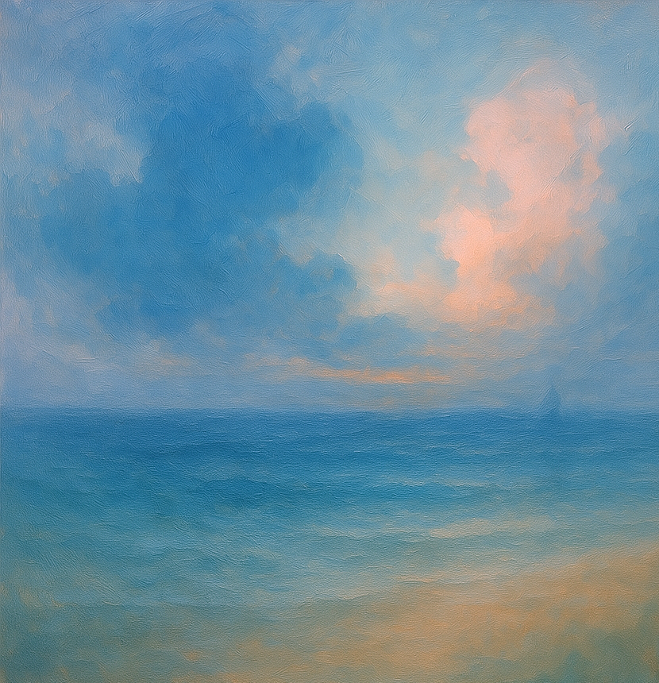
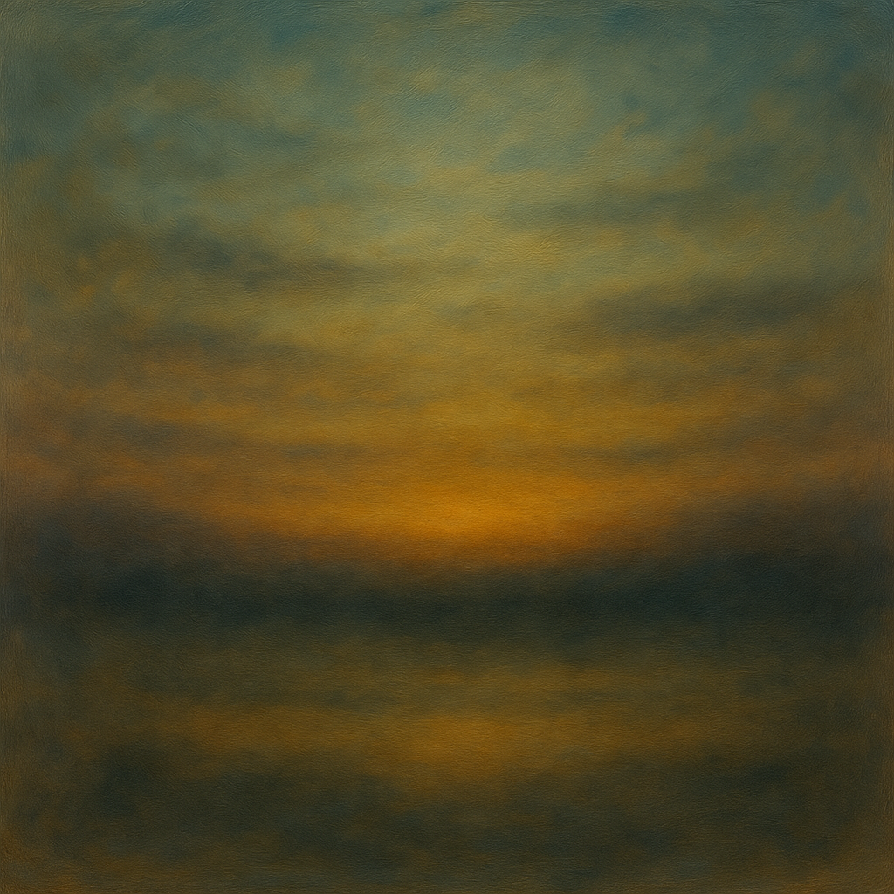
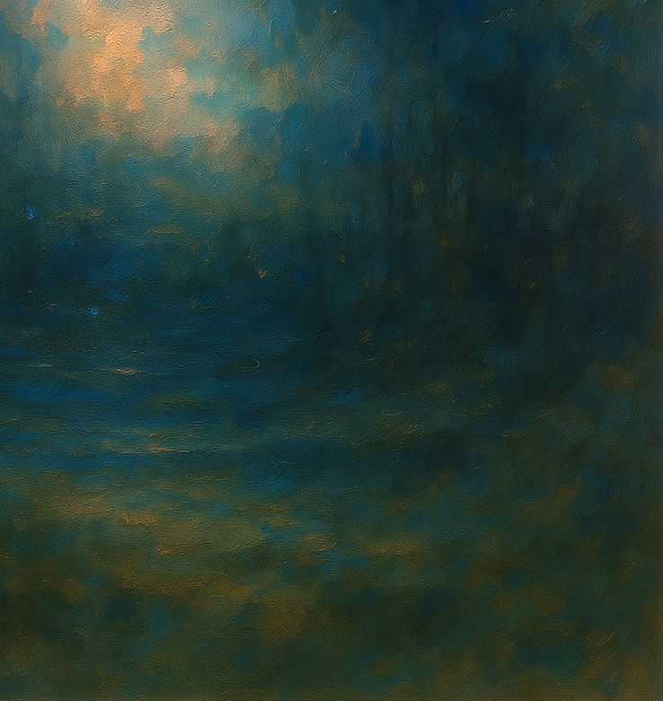
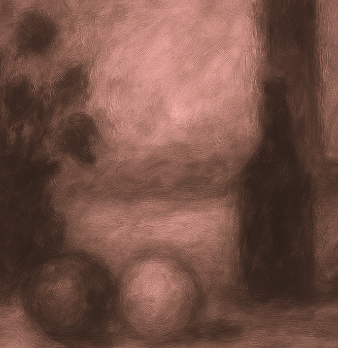

Zwischen Wasser & Wind – Gedanken in Bewegung
Eine melancholisch-schöne Reise durch Wasserlandschaften und emotionale Strömungen. Bilder werden zu Fenstern, Gedanken zu Wellen.

Dämmerungsspiel – Zwischen Licht und Vergehen
Diese Tour folgt dem Glimmen des Lichts und der Sprache der Stille. Sonnenuntergänge und stille Horizonte laden zum Innehalten ein.

Märchenwald & Spiegelräume
Wandere durch mystische Waldstücke und verborgene Bildgeschichten. Diese Tour öffnet Türen in eine Welt zwischen Realität und Traum.

Stillleben der Gedanken
Eine ruhige Reise durch Objekte, Ideen und kleine Universen. Klassisch und introspektiv – ein Blick auf die Schönheit im Gewöhnlichen.